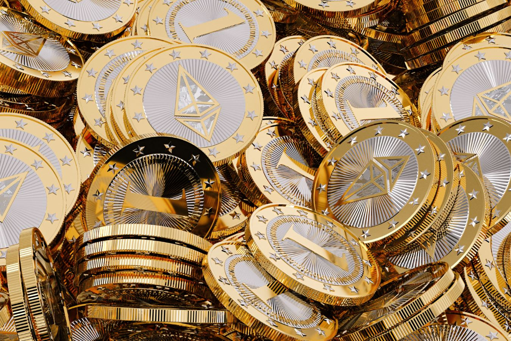

Cryptocurrencies News & Prices | Markets Insider
Business Insider Markets Insider Subscribe Markets Stocks Indices Commodities Cryptocurrencies Currencies ETFs News Economic Earnings U.S. markets closed DOW 30 +0.18% +56.84 31,097.97 S&P 500 +0.55% +20.89 3,824.68 NASDAQ 100 +1.28% +165.63 13,105.20 Gold -3.35% -64.18 1,848.88 Oil (WTI) +3.55% +1.81 52.73 EUR/USD -0.35% 0.00 1.22 Insider Markets Bonds Funds Pre-Market Market Movers Dow Jones Live Your Portfolio Stocks Stocks Finder Market Movers Index Constituents Commodities Currencies Dividends Indices Market Movers Index Constituents Dow Jones Live S&P 500 Live NASDAQ Live World Map Commodities News Commodities Live Gold Oil Copper Cryptocurrencies Bitcoin Ethereum Cryptocurrencies Live Currencies News Currencies Live Currency Converter EUR/USD GBP/USD US Dollar Index ETFs News ETF Finder ETF Issuers News Subscribe
© 2021 Insider Inc. and finanzen.net GmbH (Imprint). All rights reserved.
Registration on or use of this site constitutes acceptance of our Terms of Service and Privacy Policy .
Disclaimer | Commerce Policy | Made In NYC | Stock quotes by finanzen.net
InsiderLogin to your account
Signup Login Subscribe to BI PrimeCryptocurrencies January 10
Overview
BTC/USD -1.23% 39,653.00 7:21 AM ETH/USD 0.63% 1,289.65 7:21 AM LTC/USD -1.25% 174.95 7:21 AM EUR/USD 0.04% 1.2225 1/9/2021 USD/JPY -0.02% 103.9400 1/9/2021Most Active Cryptocurrencies
Dollar Euro Name Currency Price +/- % market cap circulating supply Volume Last Updated Bitcoin 40,746.1602 601.32 1.50 % 736.39 B 18,072,712 18.88 B 01:37:00 AM Ethereum 1,324.8402 43.28 3.38 % 144.05 B 108,728,346 7.37 B 01:37:00 AM ATMChain 26.3418 0.38 1.46 % 122.76 B 4,660,285,460 89.58 12/30/2020 Ripple 0.3556 0.03 9.62 % 15.40 B 43,299,885,509 1.27 B 01:37:00 AM Litecoin 181.6850 4.52 2.55 % 11.58 B 63,728,213 2.67 B 01:37:00 AM Bitcoin Cash 611.4182 38.41 6.70 % 11.09 B 18,138,300 1.42 B 01:37:00 AM Cardano 0.3395 0.01 1.79 % 8.80 B 25,927,070,538 59.59 M 01:35:00 AM Binance Coin 44.1254 0.12 0.26 % 6.86 B 155,536,713 195.90 M 01:35:00 AM Stellar 0.3248 0.01 3.75 % 6.51 B 20,054,779,554 227.56 M 01:36:00 AM ChainLink 17.9201 0.26 1.47 % 6.27 B 350,000,000 142.14 M 01:35:00 AM Bitcoin SV 292.2023 7.19 2.52 % 5.28 B 18,068,415 390.69 M 01:36:00 AM Tether 1.0017 0.00 -0.12 % 4.11 B 4,108,044,456 21.23 B 01:35:00 AM EOS 3.8097 0.17 4.70 % 3.59 B 942,129,908 1.49 B 01:35:00 AM Monero 157.2504 11.28 7.73 % 2.73 B 17,329,479 154.01 M 01:37:00 AM Tron 0.0364 0.00 6.66 % 2.43 B 66,682,072,191 1.30 B 01:35:00 AM NEM 0.2537 0.01 4.91 % 2.28 B 8,999,999,999 24.93 M 01:35:00 AM Neo 23.2123 2.26 10.77 % 1.64 B 70,538,831 356.11 M 01:37:00 AM Dogecoin 0.0106 0.00 4.13 % 1.30 B 122,244,140,680 99.55 M 01:36:00 AM Iota 0.4546 0.02 4.13 % 1.26 B 2,779,530,283 5.71 M 01:35:00 AM Dash 127.9051 19.55 18.05 % 1.17 B 9,177,609 384.17 M 01:37:00 AM Ethereum Classic 8.8404 1.01 12.94 % 1.02 B 115,452,693 509.55 M 01:37:00 AM Zcash 82.7065 4.55 5.82 % 657.67 M 7,951,819 142.46 M 01:37:00 AM Decred 60.5775 0.33 0.55 % 650.59 M 10,739,826 9.87 M 01:36:00 AM Waves 6.4071 0.22 3.61 % 643.64 M 100,456,642 14.82 M 01:36:00 AM OmiseGO 3.9141 0.23 6.32 % 548.93 M 140,245,398 51.49 M 01:35:00 AM Basic Attention Token 0.2930 0.02 6.00 % 397.41 M 1,356,449,189 58.05 M 01:35:00 AM DigiByte 0.0315 0.00 0.28 % 395.41 M 12,541,681,963 1.27 M 01:36:00 AM Loopring 0.3941 0.01 1.77 % 372.36 M 944,812,646 6.32 M 01:35:00 AM ICON 0.7011 0.01 1.72 % 355.23 M 506,687,343 5.46 M 01:36:00 AM Qtum 3.6246 0.36 11.14 % 348.68 M 96,197,656 344.91 M 01:35:00 AM 0x 0.5403 -0.01 -1.69 % 325.34 M 602,160,071 24.43 M 01:35:00 AM Cryptonex 5.1499 0.07 1.35 % 286.78 M 55,686,329 2.18 M 01:35:00 AM Verge 0.0161 0.00 2.47 % 258.51 M 16,076,792,109 2.81 M 01:35:00 AM Augur 21.3188 1.55 7.84 % 234.51 M 11,000,000 8.37 M 01:37:00 AM Bitcoin Gold 13.1037 1.57 13.64 % 229.50 M 17,513,924 10.97 M 01:37:00 AM Status 0.0646 0.00 2.28 % 224.35 M 3,470,483,788 37.42 M 01:35:00 AM Siacoin 0.0053 0.00 2.18 % 221.63 M 41,817,047,634 2.43 M 01:36:00 AM Kyber Network 1.2262 0.03 2.55 % 204.29 M 166,604,989 26.23 M 01:35:00 AM Lisk 1.4790 0.01 0.78 % 180.05 M 121,732,723 1.09 M 01:36:00 AM Enjin Coin 0.2095 0.00 0.54 % 164.43 M 784,764,642 2.84 M 01:36:00 AM MaidSafeCoin 0.3419 0.02 4.70 % 154.72 M 452,552,412 259,014.30 01:36:00 AM Gnosis 116.5589 2.79 2.45 % 128.75 M 1,104,590 295,919.88 01:35:00 AM Golem 0.1321 0.00 -1.26 % 127.44 M 964,450,000 4.48 M 1/8/2021 Decentraland 0.1175 0.00 1.61 % 123.42 M 1,050,141,509 18.69 M 01:35:00 AM MonaCoin 1.8715 0.18 10.46 % 123.01 M 65,729,675 626,125.93 01:36:00 AM ZenCash 16.3250 0.50 3.18 % 110.24 M 6,752,738 1.49 M 01:36:00 AM Aragon 3.6762 0.16 4.46 % 107.26 M 29,177,439 95,686.03 01:36:00 AM Bancor 1.6547 0.01 0.90 % 103.96 M 62,827,544 9.66 M 01:35:00 AM iExec RLC 1.2954 -0.05 -3.65 % 103.73 M 80,070,793 1.67 M 01:35:00 AM KuCoin Shares 1.1916 -0.05 -4.03 % 98.14 M 82,363,551 5.14 M 01:36:00 AM UTRUST 0.2050 -0.01 -4.79 % 92.27 M 450,000,000 302,510.50 01:36:00 AM Ardor 0.0873 0.00 -0.97 % 87.20 M 998,999,495 2.19 M 01:36:00 AM BitShares 0.0314 0.00 3.68 % 86.43 M 2,748,630,000 1.34 M 01:36:00 AM Steem 0.2307 0.02 12.01 % 81.32 M 352,505,335 1.46 M 01:36:00 AM Komodo 0.6446 0.02 2.59 % 75.51 M 117,139,982 5.01 M 01:36:00 AM district0x 0.1216 0.00 -0.05 % 72.96 M 600,000,000 168,850.73 01:35:00 AM Bytom 0.0724 0.00 0.67 % 72.62 M 1,002,499,275 16.36 M 01:35:00 AM Electroneum 0.0075 0.00 7.97 % 70.44 M 9,454,407,317 1.31 M 01:36:00 AM aelf 0.1381 0.00 0.98 % 68.51 M 496,030,000 37.44 M 01:36:00 AM FunFair 0.0117 0.00 2.20 % 65.36 M 5,568,585,589 335,866.05 01:35:00 AM Storj 0.4665 0.06 15.91 % 63.35 M 135,787,439 15.06 M 01:35:00 AM WhiteCoin 0.2530 0.04 16.98 % 63.31 M 250,183,629 109,559.21 01:36:00 AM Populous 1.0295 0.06 6.33 % 54.82 M 53,252,246 4.36 M 01:35:00 AM Civic 0.1586 0.00 3.18 % 54.36 M 342,699,967 527,559.43 01:35:00 AM LAToken 0.1317 -0.01 -3.83 % 50.05 M 380,104,462 4.11 M 1/8/2021 Power Ledger 0.1234 0.00 -1.36 % 49.97 M 404,852,067 2.83 M 01:36:00 AM Ark 0.4403 0.01 3.32 % 49.75 M 112,982,488 728,265.60 01:36:00 AM Kin 0.0001 0.00 -2.99 % 49.15 M 756,097,560,976 1.84 M 01:35:00 AM Syscoin 0.0837 0.00 1.01 % 46.28 M 552,701,454 569,599.85 01:36:00 AM Monaco 2.7670 0.08 2.85 % 43.70 M 15,793,831 49.63 M 01:35:00 AM ReddCoin 0.0014 0.00 -7.43 % 41.25 M 28,808,713,174 1.36 M 01:36:00 AM Numeraire 29.7058 1.58 5.63 % 40.08 M 1,349,328 8,404.39 01:35:00 AM SALT 0.4719 -0.05 -10.35 % 37.96 M 80,447,703 1.03 M 1/8/2021 Streamr DATAcoin 0.0557 0.00 5.97 % 37.70 M 677,154,514 451,963.46 01:36:00 AM Bytecoin 0.0002 0.00 -4.00 % 30.92 M 184,066,828,814 4,532.52 1/3/2021 ZCoin 3.8886 -0.08 -2.10 % 30.31 M 7,794,343 4.31 M 01:36:00 AM Melon 36.8103 0.40 1.10 % 29.91 M 812,502 9,011.73 01:36:00 AM AdEx 0.4042 0.01 1.33 % 29.68 M 73,430,701 299,098.00 01:35:00 AM Groestlcoin 0.4006 0.00 1.11 % 28.89 M 72,106,124 473.54 M 1/3/2021 Aion 0.0876 0.00 -1.51 % 27.89 M 318,443,045 2.66 M 01:36:00 AM FirstBlood 0.3154 0.00 -3.82 % 26.99 M 85,558,371 11,957.52 12/24/2020 Stox 0.5171 0.02 3.56 % 26.56 M 51,363,225 28,583.60 01:35:00 AM Aeternity 0.0905 0.00 -1.90 % 26.48 M 292,576,315 20.72 M 12/29/2020 Vertcoin 0.4767 -0.01 -4.13 % 22.63 M 47,475,625 192,724.78 1/1/2021 Nuls 0.3160 0.01 2.41 % 22.46 M 71,082,519 10.63 M 12/14/2020 Request Network 0.0297 0.00 0.42 % 21.63 M 729,658,688 421,872.14 1/1/2021 LBRY Credits 0.0907 0.00 -0.35 % 19.38 M 213,730,252 210,535.83 01:36:00 AM Neblio 1.1594 -0.04 -3.56 % 16.08 M 13,872,203 78,036.26 1/2/2021 Nxt 0.0125 0.00 -0.10 % 12.48 M 998,999,942 539,819.47 01:32:00 AM Synereo 0.0090 0.00 2.55 % 904,038.87 100,728,564 22,863.48 01:35:00 AM EncrypGen 0.0016 0.00 0.07 % 107,583.11 67,029,977 9,417.06 1/4/2021Currency Crossrates
USD EUR CHF GBP JPY USD * 0.818 0.8855 0.737 103.94 EUR 1.2225 * 1.0824 0.9011 127.07 CHF 1.1293 0.9238 * 0.8323 117.3794 GBP 1.3569 1.11 1.2011 * 141.031 JPY 0.0096 0.0079 0.0085 0.0071 *Currencies Pairs
{{tab.TranslationKey}} {{header}} ▲ ▼ {{currency[column.name]}}Currency Converter More
Quickly and easily calculate foreign exchange rates with this free currency converter: {{currency.Country}} - {{currency.IsoCode}} {{currency.Country}} - {{currency.IsoCode}} = {{calculated}} {{calculated !==''?selectedTo:''}} {{calcAmount}} {{localCurr.CurrencyNameTranslated}} = {{calculated}} {{foreignCurr.CurrencyNameTranslated}}, {{calcAmount}} {{foreignCurr.CurrencyNameTranslated}} = {{foreignCalculated}} {{localCurr.CurrencyNameTranslated}} Don't get overcharged when you send money abroad. We recommend trying out cheaper alternatives like TransferWise. Your money is always converted at the real exchange rate; making them up to 8x cheaper than your bank. Send MoneyLatest Stories
Business Insider 22h3 reasons why bitcoin has doubled in less than a month - and why experts think it won't repeat its 2017 crash
Bitcoin has been legitimized by Interest from public companies and institutional investors, and more investors view it as an effective way to hedge.
Business Insider 1dBillionaire investor Chamath Palihapitiya predicted Tesla stock will triple and Bitcoin will soar 5-fold in a recent interview. Here are the 15 best quotes.
The Social Capital boss and Virgin Galactic chairman slammed Facebook, defended SPACs, and argued the current market boom won't end in disaster.
Business Insider 2dBillionaire investor Chamath Palihapitiya says bitcoin will surge to $200,000 as more investors realize they need an 'uncorrelated hedge' against untrustworthy national leaders
"The fabric of society is frayed and until we figure out how to make it better it's time to just have a little schmuck insurance on the side," said Palihapitiya.
Business Insider 2dBitcoin hits new all-time high of $41,000 as investors shrug off recent volatility and pile into cryptocurrency
Bitcoin topped a new high of $41,000 on Friday despite tumbling to below $37,000 overnight, as unfazed investors snapped up the cryptocurrency.
Business Insider 3dSquare's crypto business could generate $1 billion in profit if bitcoin soars to $100,000, Wall Street analyst says
Bitcoin traded above $39,000 for the first time ever on Thursday, and the crypto market as a whole is now worth more than $1 trillion.
About cryptocurrencies
What is blockchain technology?
You've likely heard some of the following terms if you've paid attention to the world of finance: Cryptocurrency, Blockchain, Bitcoin, Bitcoin Cash, and Ethereum. But what do they mean? And why is cryptocurrency suddenly so hot?
First, we'll explain the blockchain basics.
As society become increasingly digital, financial services providers are looking to offer customers the same services to which they're accustomed, but in a more efficient, secure, and cost effective way.
Enter blockchain technology.
The origins of blockchain are a bit nebulous. A person or group of people known by the pseudonym Satoshi Nakomoto invented and released the tech in 2009 as a way to digitally and anonymously send payments between two parties without needing a third party to verify the transaction. It was initially designed to facilitate, authorize, and log the transfer of bitcoins and other cryptocurrencies. (read more)
How does blockchain technology work?
Blockchain tech is actually rather easy to understand at its core. Essentially, it's a shared database populated with entries that must be confirmed and encrypted. Think of it as a kind of highly encrypted and verified shared Google Document, in which each entry in the sheet depends on a logical relationship to all its predecessors. Blockchain tech offers a way to securely and efficiently create a tamper-proof log of sensitive activity (anything from international money transfers to shareholder records).
Blockchain's conceptual framework and underlying code is useful for a variety of financial processes because of the potential it has to give companies a secure, digital alternative to banking processes that are typically bureaucratic, time-consuming, paper-heavy, and expensive.
What are cryptocurrencies?
Cryptocurrencies are essentially just digital money, digital tools of exchange that use cryptography and the aforementioned blockchain technology to facilitate secure and anonymous transactions. There had been several iterations of cryptocurrency over the years, but Bitcoin truly thrust cryptocurrencies forward in the late 2000s. There are thousands of cryptocurrencies floating out on the market now, but Bitcoin is far and away the most popular.
How do you mine cryptocurrency?
Bitcoin, Litecoin, Ethereum, and other cryptocurrencies don't just fall out of the sky. Like any other form of money, it takes work to produce them. And that work comes in the form of mining.
But let's take a step back. Satoshi Nakamoto, the founder of Bitcoin, ensured that there would ever only be 21 million Bitcoins in existence. He (or they) reached that figure by calculating that people would discover, or "mine," a certain number of blocks of transactions each day.
Every four years, the number of Bitcoins released in relation to the previous cycle gets reduced by 50%, along with the reward to miners for discovering new blocks. At the moment, that reward is 12.5 Bitcoins. Therefore, the total number of Bitcoins in circulation will approach 21 million but never actually reach that figure. This means Bitcoin will never experience inflation. The downside here is that a hack or cyberattack could be a disaster because it could erase Bitcoin wallets with little hope of getting the value back.
As for mining Bitcoins, the process requires electrical energy. Miners solve complex mathematical problems, and the reward is more Bitcoins generated and awarded to them. Miners also verify transactions and prevent fraud, so more miners equals faster, more reliable, and more secure transactions.
Thanks to Satoshi Nakamoto's designs, Bitcoin mining becomes more difficult as more miners join the fray. In 2009, a miner could mine 200 Bitcoin in a matter of days. In 2014, it would take approximately 98 years to mine just one, according to 99Bitcoins.
Super powerful computers called Application Specific Integrated Circuit, or ASIC, were developed specifically to mine Bitcoins. But because so many miners have joined in the last few years, it remains difficult to mine loads. The solution is mining pools, groups of miners who band together and are paid relative to their share of the work.
Current & future uses of blockchain technology & cryptocurrency
Since its inception, Bitcoin has been rather volatile. But based on its recent boom — and a forecast by Snapchat's first investor, Jeremy Liew, that it would hit $500,000 by 2030 — and the prospect of grabbing a slice of the Bitcoin pie becomes far more attractive.
Bitcoin users expect 94% of all bitcoins to be released by 2024. As the number moves toward the ceiling of 21 million, many expect the profits miners once made from the creation of new blocks to become so low that they will become negligible. But as more bitcoins enter circulation, transaction fees could rise and offset this.
As for blockchain technology itself, it has numerous applications, from banking to the Internet of Things. It is expected that companies will flesh out their blockchain IoT solutions. Blockchain is a promising tool that will transform parts of the IoT and enable solutions that provide greater insight into assets, operations, and supply chains. It will also transform how health records and connected medical devices store and transmit data.
Blockchain won’t be usable everywhere, but in many cases, it will be a part of the solution that makes the best use of the tools in the IoT arsenal. Blockchain can help to address particular problems, improve workflows, and reduce costs, which are the ultimate goals of any IoT project.
About the currency calculator
Do you deal in shares in different currencies? Do you like to travel? Do you like to shop on foreign online shops? The currency calculator of Markets Insider is the ideal tool for you.With the currency calculator, you can quickly and easily convert amounts between any currencies. In total, there are about 160 different currencies available on the currency calculator.
Once you select the base and target currencies from the list and enter the desired amount into the provided field, the currency calculator immediately gives you the result. Additionally, you can also choose whether to calculate the result based on the current exchange rate or the exchange rate on a certain date. This way, the Markets Insider currency calculator allows you to search for historical exchange rates. The result provided by the currency calculator is displayed in a clearly arranged table. Here, the currency calculator shows the opening and closing rate as well as the lowest and highest rates for the respective date. (read more)
General information about currencies:Currencies have existed for several millennia; they arose primarily as a replacement for the ineffective barter trade. The functions that a currency took on (means of payment, value storage, unit of value) were essential to the development of an efficient economy with division of labor. In the beginning, different items were used as currency, including metals, pearls, shells or agricultural products. Minting of coins from precious metals was developed about 2500 years ago in ancient Greece; paper money has existed for about 1000 years.
Today, almost every country has its own currency, with the exception of countries with a common currency (such as the Eurozone) or countries that have adopted a foreign currency (such as the euro in Kosovo). Thus, there are worldwide more than 160 official currencies that can be traded on the currency market at constantly changing exchange rates. On the currency market, there is a larger trade volume than on the credit or the stock market. For decades, the most important base currencies of the world have been the U.S. dollar, the euro, the British pound and the Japanese yen. Markets Insider see also: Insider Business Insider S&P500 Stocks: ALL 0-9 a b c d e f g h i j k l m n o p q r s t u v w x y z Dow Jones Gold Price Oil Price EURO DOLLAR CAD USD PESO USD POUND USD USD INR Bitcoin Price Currency Converter Exchange Rates Realtime Quotes Premarket Google Stock Apple Stock Facebook Stock Amazon Stock Tesla Stock * © 2021 Insider Inc. and finanzen.net GmbH (Imprint). All rights reserved. Registration on or use of this site constitutes acceptance of our Terms of Service and Privacy Policy . Disclaimer | Commerce Policy | Made In NYC | Stock quotes by finanzen.net Need help? Contact us!
